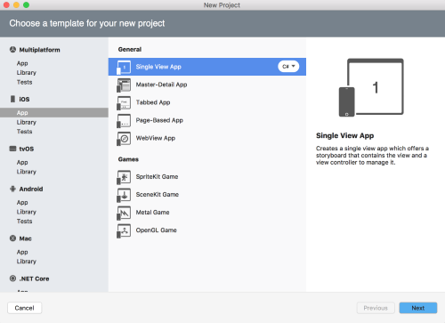
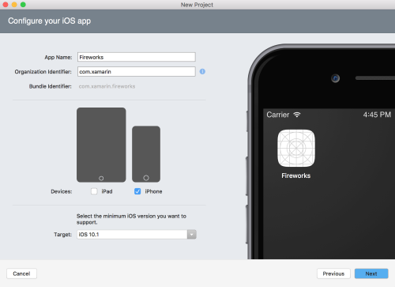
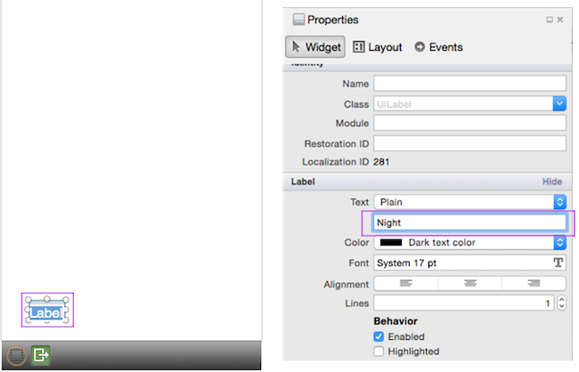
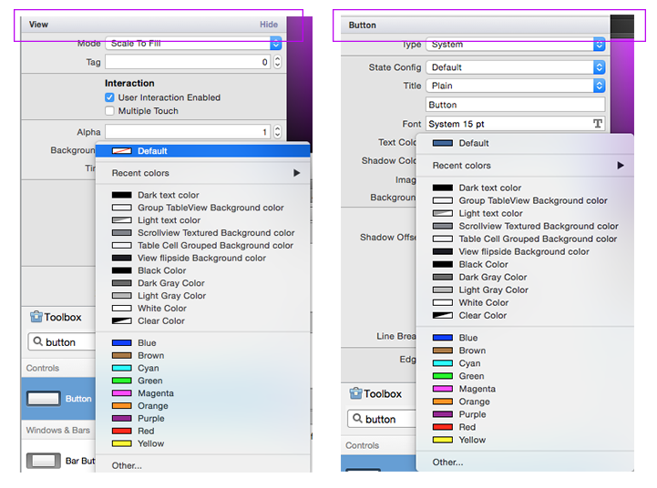
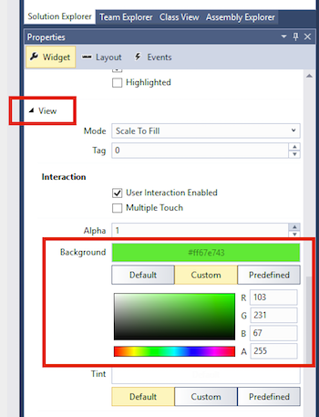
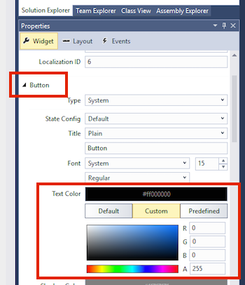

Duration
15 minutes
Goals
The primary goal of this lab will be to create a new single view application and add controls using the Xamarin.iOS storyboard designer. The finished UI should look something like:

Required assets
There is a completed version of the exercise in the Part 01 Resources folder if you'd like to compare your solution when you are finished.
Challenge
Create a new iOS application and add controls using the iOS designer.
- Create a new iOS Single View App
- Name the project Fireworks.
- Uncheck "iPad" under Devices so that only the iPhone device is selected.
- Open the Main storyboard file.
- Select the storyboard and turn off size classes.
- Add the following views to the View Controller using the above screen as a guide.
- Two Labels, set the text to Night & Size.
- A Button, set the Text to "Start", then change the background color to something you like. Make sure you can still see the text - depending on the color you choose, you may need to also change the text color.
- A Switch
- A Slider
- Verify your design against the above picture and then run the app - try it on different simulators and orientations ... what happens?
Steps
Create the Fireworks application
-
Create a new iOS application using the Single View App template.
- Name it "Fireworks".
- Uncheck iPad from the supported devices.
|  |  |
Disable Size Classes
- Open Main.storyboard and wait for the designer to load.
- Click on the design surface outside of the view controller, this will give you access to the properties for the storyboard.
- In the Properties pane, uncheck Use Size Classes.
- In the popup, choose to keep size class data for iPhone.


Add Labels
- Look in the Toolbox for a Label.
Tip: To find your views more quickly you can use the Search Bar at the top of the Toolbox.
- Drag a label to the lower left corner of the view controller on the design surface - make use of the blue guidelines to help you with spacing.
- Double click on the top label to change it's text to "Night:". You can do this on the storyboard OR in the properties pane. 
- Drag a second label and place it below the first and align them on the left edge.
- Change the text on the lower label to "Size:".
- Use the round dragging controls to expand the width of both Labels to make sure the text is completely visible.

Add additional controls
- Search for a Switch in the Toolbox and place it to the right of the first Label ("Night").
- Search for a Button and place it to the right of the Switch you just added.
- Use the Properties pane to set the Button's Background Color. You will find this under the "View" section. The completed solution uses Green, but feel free to pick whatever color you prefer. Depending on the color you choose you may need to change the Text Color under the Button section to make it visible. 
- Change the Title of the Button to Start using the properties pane.
- Search for a Slider and add it to the right of the bottom Label.
- Expand the width of the Slider to take up the remaining width of the screen.
Create the Fireworks application
-
Create a new iOS application using the iPhone > Single View App template.
- Name it "Fireworks".

Disable Size Classes
- Open Main.storyboard and wait for the designer to load.
- Click on the design surface outside of the view controller, this will give you access to the properties for the storyboard.
- In the Properties pane, uncheck Use Size Classes.
- In the resulting popup, choose to keep size class data for iPhone and click Disable to dismiss the dialog.


Add Labels
- Look in the Toolbox for a Label.
Tip: To find your views more quickly you can use the Search Bar at the top of the Toolbox.
- Drag a label to the lower left corner of the view controller on the design surface - make use of the blue guidelines to help you with spacing.
- Double click on the label to change it's text to "Night:". You can do this on the storyboard OR in the properties pane.
- Drag a second label and place it below the first one and align them on the left edge.
- Change the text on the lower label to "Size:".
- Use the round dragging controls to expand the width of both labels to make sure the text is completely visible.


Add additional controls
- Search for a Switch in the Toolbox and place it to the right of the first Label ("Night").
- Search for a Button and place it to the right of the Switch you just added.
-
Use the Properties pane to set the Button's Background.
- You will find this under the "View" section in the Property pane when the Button is selected.
- You will need to change the color from "Default" to "Custom" to select a custom color from the color picker as shown below.
- The completed solution uses Green, but feel free to pick whatever color you prefer.
- Depending on the color you choose you may need to change the Text Color property under the Button section to make it visible.
|  |  |
- Change the Title of the Button to Start using the properties pane.
- Search for a Slider and add it to the right of the bottom Label.
- Expand the width of the Slider to take up the remaining width of the screen.
Run the application
Compare your screen to the finished lab and make sure it looks similar.
Once you are satisfied with the results, run the application using the iOS simulator. Try rotating the device (use the Hardware menu). Try different simulator sizes - iPhone 4s, iPhone 5, iPhone 6, and iPhone 6 Plus. What do you notice about the controls?
Summary
In this lab you created a new single view iOS application and used the Xamarin.iOS storyboard designer to create the UI for your application.